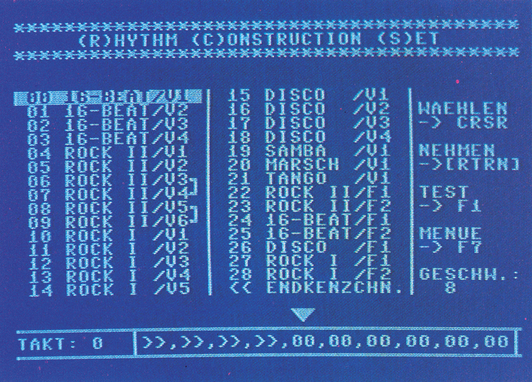
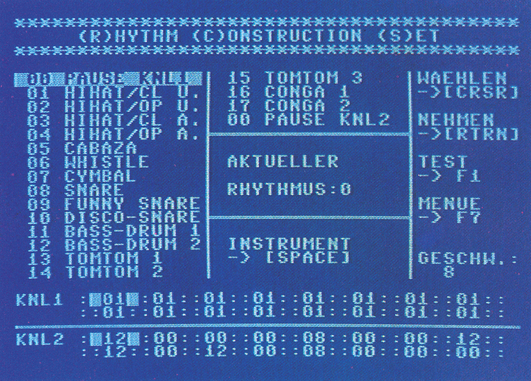

Das Rhythm Construction Set (R.C.S.)
Rhythmen und Rhythmussequenzen, ja sogar ganze Schlagzeug-Begleitungen lassen sich mit diesem Generatorprogramm auf komfortabelste Weise erstellen.
Ein unentbehrliches Instrument für jeden Musik-Fan, das als Begleitinstrument für Musiker, Untermalung zu Spielen oder einfach nur zum Experimentieren verwendet werden kann. R.C.S. ist ein System zur Erstellung von Rhythmen und Rhythmensequenzen, das auch selbständig (das bedeutet im Interrupt) ablauffähige Musikstücke generieren kann.
Mit 17 nachgeahmten Instrumenten und 29 verschiedenen Rhythmen steht dem Musik-Programmierer ein umfangreiches Werkzeug zur Verfügung. Diese Rhythmen und Instrumente können vom Anwender in beliebiger Reihenfolge zu (auch selbständig ablauffähigen) Rhythmusprogrammen zusammengesetzt werden (Bild 1). Ebenfalls besteht die Möglichkeit, Rhythmenmuster zu verändern und neue Rhythmen zu erstellen (Bild 2).


Da nur zwei Stimmen belegt sind, kann die dritte Stimme mit einem eigenen Sound belegt werden. Da über diverse Zeropage-Adressen der aktuelle Rhythmus und Takt abgefragt werden kann, ist diese dritte Stimme voll synchron steuerbar. Dies mag zwar etwas wenig erscheinen, doch kann man daraus durchaus recht melodiöse Stücke zaubern. Die Demos auf der Leser-Service-Diskette sprechen wohl für sich. Die Musikstücke sind im Interrupt spielbar. Um eine bessere Tonqualität zu erreichen, sollte die Wiedergabe möglichst über eine HiFi-Anlage erfolgen! Das R.C.S. ist vollständig menügesteuert; außerdem sind in jedem Programmteil alle wichtigen Funktionen angegeben.
Die Anwendung
Haben Sie eine Rhythmussequenz erstellt, getestet und für gut befunden, so können Sie diese auf Diskette speichern. Haben Sie zuvor im Diskmenü »I« für Interrupt gedrückt, so sind diese Files für sich selbst im Interrupt ablauffähig, können also auch in eigene Programme eingebunden werden. Dadurch, daß das R.C.S. nur zwei Stimmen belegt, können Sie noch ein eigenes Musikstück, aufgebaut auf einer Stimme, anhängen. Alles in allem ein gelungenes Programm, das durch seine Vielseitigkeit den Titel »Anwendung des Monats« rechtfertigt.
(Georg Brandt/dm)TODO ASIDE
Lebenslauf
Ich wurde am 12.3.1969 in Essen-Kupferdreh geboren und besuche zur Zeit das Gymnasium Essen-Überruhr. Schon im frühen Kindesalter entwickelte ich einen starken Trieb für technische Geräte, so daß mir etliche Uhren, Rasierapparate und Toaster zum Opfer fielen. Kurz nach dem Wechsel auf die höhere Schule erstand ich — im Älter von 13 Jahren — den ersten »Volks-Computer«, mit dem ich mich länger beschäftigte, als es meinen Eltern lieb war. Auf diesem abenteuerlichen Gerät erlernte ich mit Feuereifer erst Basic und später die Grundlagen der Maschinensprache. Weitere PA Jahre später vermachte ich diesen einem würdigen Nachfolger und stieg selbst auf den C 64 um (wie konnte es auch anders sein?). Diesem bin ich bis heute treu geblieben. Zwar habe ich auf dem C 64 eine Menge verschiedener Dinge programmiert, doch beschäftige ich mich am meisten mit dem Schreiben von Musik, sowohl auf meinem Computer wie auch auf meinem Keyboard. Ein Resultat dieser Begeisterung ist der R.C.S. Allen musikbegeisterten Freaks wünsche ich damit viel Spaß!
(Georg Brandt)R.C.S. ist ein Programm, das zur Erstellung von Rhythmen und Rhythmussequenzen dient. Es umfaßt 17 Instrumente und 29 verschiedene Rhythmen, die in Sequenzen angeordnet werden können.
Das Rhythm Construction Set ist ein Generatorprogramm, das der Erstellung selbständig ablauffähiger Rhythmen und Rhythmussequenzen dient. Das Programm kann als Begleitautomat für Hobby-Musiker, als Untermalung zu Musik- oder Spiel-Programmen, oder einfach nur aus Freude am Komponieren benutzt werden.
Dazu stehen 17 nachgeahmte Instrumente zur Verfügung, .die zu zwei Kanälen gruppiert sind (siehe Tabelle 1). Der eine Kanal enthält die im Vordergrund stehenden Instrumente (Bass-Drum, Snare-Drum etc.), der andere Kanal enthält begleitende Instrumente (Hi-Hat, Cabaza etc.). Auf einem Kanal kann jeweils nur ein Instrument gleichzeitig gespielt werden, da während der Wiedergabe der entsprechende Kanal des SID vollständig belegt wird.
| Kanal 1: | Kanal 2: | ||
|---|---|---|---|
| Nr. /Bezeichnung | Aufruf | Nr. /Bezeichnung | Aufruf |
| 01 Hi-Hat closed/unbetont | $96FF | 08 Snare Drum | $96EE |
| 02 Hi-Hat open/unbetont | $9572 | 09 Funny Snare | $961E |
| 03 Hi-Hat closed/betont | $9526 | 10 Disco Snare | $9647 |
| 04 Hi-Hat open/betont | $954C | 11 Bass Drum 1 (weich) | $9598 |
| 05 Cabaza (Rassel) | $9725 | 12 Bass Drum 2 (hart) | $95C3 |
| 06 Whistle (Trillerpfeife) | $9774 | 13 Tom Tom 1 | $9675 |
| 07 Cymbal (Becken) | $974B | 14 Tom Tom 2 | $96A3 |
| 15 Tom Tom 3 | $96D1 | ||
| 16 Conga 1 | $979F | ||
| 17 Conga 2 | $97C7 | ||
| (Begleitinstrumente) | (betonte Instrumente) | ||
Im R.C.S. sind 29 Rhythmen (Rock, Disco, 16 Beat…) beziehungsweise Fill-Ins (Schlagzeugsoli) gespeichert, die alle durch den Benutzer verändert werden können. Die Rhythmen bestehen aus 16 Einheiten, das heißt, daß ein Rhythmustakt aus maximal 16 Schlägen bestehen kann.
Des weiteren können die Rhythmen zu Rhythmussequenzen (Folge von verschiedenen Rhythmen) mit einer maximalen Länge von insgesamt 252 Takten angeordnet werden.
Um eine bessere Tonqualität zu erreichen, sollte die Wiedergabe möglichst über eine Hi-Fi-Anlage erfolgen! R.C.S. ist vollständig menügesteuert. Außerdem sind in jedem Programmteil alle wichtigen Funktionen angegeben.
Bedienung des Programms
Das Programm wird geladen und mit RUN gestartet. Danach befindet man sich im Hauptmenü. Von diesem aus kann man durch Drücken der Funktionstasten in folgende Bereiche gelangen: Rhythmussequenzen-Editor, Rhythmenmuster-Editor, Diskettenmenü und Abschluß mit/ohne Rhythmus.
Rhythmussequenzen-Editor: In diesem Programmteil kann man einzelne Instrumente zu Rhythmussequenzen zusammenfügen.
Im oberen Teil des Bildschirms befindet sich eine Aufstellung aller Rhythmen sowie der dazugehörigen Kennummern. Rhythmusvariationen sind gekennzeichnet durch ein »V« hinter ihrem Namen, Fill-Ins durch ein »F«. Der aktuelle Rhythmus ist revers gekennzeichnet.
Im unteren Bereich befindet sich ein Display, auf dem die Rhythmussequenzen dargestellt werden. In der linken Ecke des Displays wird der aktuelle Takt innerhalb der Rhythmussequenz angezeigt. Rechts daneben ist der für diesen Takt gewählte Rhythmus (siehe Pfeil) sowie die vier vorausgehenden und die fünf nachfolgenden Takte dargestellt. Die Rhythmen werden dabei durch die entsprechenden Kennummern angezeigt.
Mit Hilfe von <CRSR LEFT/RIGHT> kann die Position innerhalb der Sequenztabelle bestimmt werden. Mit <CRSR UP/DOWN > kann der gewünschte Rhythmus gewählt werden, der nun revers dargestellt wird. Durch Druck von <SPACE> wird dieser »testgespielt«, bis man eine Taste drückt. Will man den aktuellen Rhythmus an der aktuellen Sequenzposition abspeichern, ist <RETURN> zu drücken, wobei der Sequenzdisplay automatisch auf die nächste Sequenzposition vorgerückt wird. Um an der aktuellen Position Platz zu schaffen, drücken Sie bitte <INSERT>. Dadurch werden alle Rhythmen ab der aktuellen Position um eine Stelle nach rechts aufgerückt. Dies ist selbstverständlich bis über das Display hinaus möglich. Soll der aktuelle Rhythmus-Takt aus der Sequenz entfernt und alle weiteren Rhythmen eingerückt werden, so ist < DELETE > zu drücken. Mit Hilfe von < HOME > gelangt man direkt in den Takt 0. Durch zweimaliges Drücken von < CLR > wird die Sequenztabelle gelöscht.
Das in der Rhythmustabelle befindliche Endekennzeichen (Symbol: < <) kann wie ein Rhythmus in die Sequenztabelle übernommen werden. Wird es bei der Wiedergabe erreicht, springt das Programm zurück auf Takt 0 und die gesamte Sequenz wiederholt sich von neuem.
Soll die gesamte Sequenz ab aktueller Position gespielt werden, ist Fl zu drücken. Mit»+«und»-«können Sie die Geschwindigkeit verändern. F7 führt Sie zurück in das Hauptmenü.
Hinweis: Rhythmus 06/07 und 08/09 gehören zusammen und ergeben hintereinandergespielt den »Nineteen« — beziehungsweise »Axel F.«-Rhythmus.
Rhythmenmuster-Editor: In diesem Programmteil können Rhythmenmuster verändert und neue Rhythmen erstellt werden. Dieser Bereich ist in Bedienung und Struktur dem Rhythmussequenzen-Editor sehr ähnlich. Im oberen Bereich werden alle Instrumente und die dazugehörigen Kennummern sowie der aktuelle Rhythmus(dargestellt durch die Rhythmusnummer) angezeigt. Das aktuelle Instrument erscheint revers. Unten wirddie Instrument-Belegung des aktuellen Taktes dargestellt. Die oberen 16 Zahlen bezeichnen Instrumente für den ersten, die unteren 16 Zahlen die für den zweiten Kanal (siehe Tabelle 1).
Mit Hilfe von <CRSR UP/DOWN> kann das gewünschte Instrument ausgesucht und durch < SPACE > gespielt werden. Mit < CRSR LEFT/RIGHT > kann die Position innerhalb des Taktes gewählt werden, an dem man die nächste Änderung vornehmen will. Mit»,«und».«können Sie den Rhythmus aussuchen. Hierbei wird die neue Rhythmuskennummer angezeigt und das gewünschte Rhythmusmuster im Edit-Be-reich dargestellt. Mit <HOME> gelangt man auf die erste Position des Rhythmusmusters. Durch < RETURN > wird das gewählte Instrument an die aktuelle Position innerhalb des Rhythmus' geschrieben. Die Zuordnung an die Kanäle (siehe Tabelle 1) erfolgt automatisch: Instrumente mit einer Kennnummer bis einschließlich 7 werden dem ersten, alle anderen dem zweiten Kanal zugeordnet.
Soll in den aktuellen Rhythmus das Muster eines anderen Rhythmus kopiert werden, ist»=«zu drücken. Jetzt ist (mittels »,«und».«) der Rhythmus zu wählen, der kopiert werden soll. Durch < RETURN > führt das Programm diese Funktion aus. Mit F7 gelangt man wieder in das Hauptmenü.
Diskmenü: Die einzelnen Funktionen werden durch die im Menü aufgeführten Tasten aufgerufen.
Register speichern: Ruft man diese Funktion auf, so wird der Benutzer aufgefordert, anzugeben, ob Sequenzen, Rhythmenmuster, alles oder ein Interrupt-File (siehe weiter unten) gespeichert werden soll. Hierzu ist der entsprechende Anfangsbuchstabe zu drücken. Danach muß man den Namen für das abzuspeichernde File angeben. Nach dem Speichern wird der Fehlerkanal ausgelesen. Wurde kein Name eingegeben, so führt das Programm die Speicherungs-Vorbereitungen nicht aus.
Register laden: Mit dieser Funktion werden zuvor gespeicherte Sequenzen/Rhythmen geladen. Anschließend wird der Fehlerkanal gelesen. Wurde kein Name angegeben, ist die Ladevorbereitung hinfällig.
Directory: Anzeigen des Directorys.
Disk Command/Status: Hiermit können Floppy-Kommandos gesendet werden. Eine leere Eingabe fragt den Fehlerkanal ab.
Rückkehr in das Hauptmenü mit F7.
Tips zur Erstellung von Rhythmussequenzen
Die meisten Sequenzen haben einen Wiederholzyklus von 4, 8, 16 oder mehr Takten (nur gerade Zahlen). Fill-Ins sollten dabei nicht allzu häufig verwendet werden, da sie dadurch an Wirkung einbüßen.
Sequenzen zum Ausprobieren:
00 01 00 23 00 01 00 24 <<
10 14 10 27 10 13 10 28 <<
Tips zur Erstellung von Rhythmus-/Fill-In-Mustern:
Selbstverständlich gibt es kein Patentrezept, jedoch sollten folgende Grundregeln beachtet werden:
Rhythmus (besonders Kanal 2) nicht überfüllen. Fill-Ins können dagegen auch etwas stärker gefüllt werden. Ein Grundschlag sollte zu erkennen sein (also: nicht allzu chaotisch!).
Einbau von Rhythmen in eigene Programme (Interruptbetrieb)
Mit R.C.S. erstellte Rhythmen können nicht nur zusammen mit dem Hauptprogramm, sondern auch selbständig im Interruptbetrieb gespielt werden. Das bedeutet, daß die Rhythmuswiedergabe permanent und unabhängig von einem eigenen Basic-/Maschinenprogramm erfolgt.
Dadurch kann es leicht in eigene Programme integriert werden. Ein Interrupt-R.C.S.-File erhält man, indem man im Diskmenü beim Speichern »I« für Interrupt drückt. Dadurch wird auf Diskette ein File erzeugt, das getrennt vom Hauptprogramm lauffähig ist. Es enthält alle Instrumente, Rhythmenmuster sowie die erstellten Rhythmussequenzen. Es wird (getrennt von R.C.S.) geladen und mit SYS 39242 gestartet. Bei Verwendung sind folgende Register (dezimal) von Interesse: 250 — aktueller Sequenztakt
249 — Position (0-15) im aktuellen Sequenztakt
179 — Zähler für Geschwindigkeit (zählt von Geschwindigkeitswert auf 0)
2 — Zähler für die Zeit ab dem letzten Warte-Befehl (siehe unten)
$9DDB — $9ED8 Sequenztabelle. Enthält die Kennummer des Rhythmus für den jeweiligen Takt
Da die erste Stimme des SID nicht mitbenutzt wird, kann sie zur Erzeugung einer (Baß-) Melodie benutzt werden. Es muß jedoch beachtet werden, daß nach dem SYS-Aufruf die Register der Stimmen 2 und 3 sowie der Filter nicht mehr benutzt werden dürfen. Zum Filter gehört unter anderem auch das Lautstärkeregister, in dem bei Verwendung des R.C.S. immer Bit 6 gesetzt sein muß.
Soll also eine Melodie zum Schlagzeug gespielt werden, muß sie mit dem Rhythmus synchronisiert werden. Um dies zu erreichen, verwaltet das R.C.S. einen internen Zähler, der permanent die ausgeführten Schläge mitzählt. Durch Aufruf des Interrupt-Programms wird dieser automatisch zurückgesetzt. Nachdem eine Note gespielt wurde, kann mit dem Befehl SYS 39317,<X> (X = Wert von 0 bis 255) X Schläge gewartet werden. Diese Anzahl ist gewöhnlich ein Vielfaches der Wiederholungsgeschwindigkeit. Für die nächste Note wird der Vorgang wiederholt.
Sollen die Instrumente einzeln von Basic aus gespielt werden, ist wie folgt vorzugehen: beliebiges R.C.S.-Interrupt-File laden und mit SYS 39301 initialisieren. Jetzt können die Instrumente mit Hilfe der in Tabelle 1 angegebenen SYS-Aufrufe (zuerst in dezimal umrechnen) gespielt werden.
Das R.C.S. (Listing 1) geben Sie bitte mit dem MSE ein und speichern es. Gestartet wird der Set durch RUN.
Variosystem verwandelt Ihren Drucker in eine kleine Druckerei. Schriften jeder Art, vorgefertigt oder selbst definiert — Sie haben die freie Wahl. Ganz besonders reizvoll ist der Near Letter Quaiity-Druck mit jedem Epson-kompatiblen Drucker. Zum Erstellen der Texte dient das bekannt-bewährte Vizawrite 64.
Varioprint bietet eine Vielzahl von interessanten Funktionen: Fünf verschiedene Zeichensätze haben in dem Speicher des C 64 Platz. Diese Zeichensätze können vom Dokument aus über die (vom Benutzer definierbaren) Druckersteuerzeichen 0 bis 4 in Vizawrite 64 angewählt werden. Diese Druckersteuerzeichen müssen nicht in der Formatzeile von Vizawrite 64 angemeldet werden. Sie werden genauso benutzt, wie die Steuerzeichen für Unterstreichen oder Fettdruck: Soll ein Teil eines Textes in anderer Schriftart erfolgen, so ist an dieser Stelle die Taste »CTRL« und die Nummer des gewünschten Zeichensatzes im Vario-print zu drücken. Später, beim Ausdruck mit Varioprint, erfolgt ab dieser Stelle die Umstellung auf den gewählten Zeichensatz. Vermeiden sollte man dabei, in einer Zeile zwischen einem NLQ- und einem normalhohen Zeichensatz umzuschalten. Sonst gibt es keine Beschränkung, die Zeichensätze zu wechseln. Die augenblicklich eingestellte Schriftart erscheint in der letzten Bildschirmzeile. Ist dieser Zeichensatz als NLQ-Schrift definiert, leuchtet das »n« von Varioprint grün auf.
Alle fünf Zeichensätze können beliebig nachgeladen werden. Im Klartext: Sie können mit einer voll ausgestatteten Version des Varioprint auf alle jemals erstellten Zeichensätze zurückgreifen. Alle im Speicher befindlichen Zeichensätze können vom Dokument aus angesprochen werden und ermöglichen einen Ausdruck mit maximal fünf verschiedenen Schriftarten. Vizawrite 64 legt seine Dokumente in Kurzform im Speicher ab, die Formatierung wirkt sich erst auf dem Bildschirm aus. Konkret bedeutet das, daß eine freie Zeile auf dem Bildschirm im Textspeicher nur ein einziges Zeichen (nämlich ein Carriage Return (CHR$(13)) lang ist. Ebenso verhält es sich mit den freien Zeichen zwischen den Tabulatoren oder der automatischen Zentrierung. Durch diese, den Speicherplatz schonende Methode, wird es für Varioprint möglich, mittels Generierung einer neuen Formatzeile die Formatierung des Dokumentes (in bestimmten Grenzen) zu ändern.
Da die Zeilenlänge auf maximal 58 (im Schmalschriftmodus 100) Buchstaben beschränkt ist, wird der gesamte Text auf diese Zeilenlänge umformatiert, auchwenn die originale Formatzeile länger ist (kürzere Zeilen sind natürlich trotzdem möglich). Die Tabulatoren, Rechtsbündigkeit und die Zentrierung werden auf das neue Format umgerechnet. Mit Varioprint kann also jede Textdatei, die sich auch innerhalb von Vizawrite 64 umformatieren läßt, sofort ausgedruckt werden. Der Druck selbst läßt die sechs (ESC " *" 0 bis 5) Grafikmodi des FX-80 zu. Diese, wie auch die Rechtsbündigkeit, der linke Rand und der Startzeichensatz sind vor dem Druck beliebig einstellbar. Dabei wurde Wert darauf gelegt, sämtliche Systemmeldungen, Tastenbelegungen und Bildschirmmasken denen von Vizawrite 64 anzugleichen, so daß dem Benutzer die Bedienung leichtfällt (Bild 1). Gerade um die Bedienung zu vereinfachen, wurde darauf geachtet, soviel Variationsbreite wie möglich, mit so wenig Aufwand für den Benutzer wie nötig, zu verbinden. So gehört der Varioprint zu der Kategorie der »Do-What-I-Mean«-Programme.
Varioprint ist in reiner Maschinensprache geschrieben (nicht compiliert), so daß es sehr schnell arbeitet. Wenn kein Drucker angeschlossen ist, druckt das Programm übrigens nur auf dem Bildschirm aus. Die Zeit, die es braucht um eine Zeile zu errechnen, ist kaum meßbar. Deswegen kann mit der Taste < CTRL > die recht schnelle Bildschirmausgabe verlangsamt werden. Daß es bei eingeschaltetem Drucker trotzdem relativ lange dauert, bis die nächste Zeile auf dem Bildschirm erscheint, liegt am seriellen Bus des C 64, der pro Zeile (58 Zeichen) immerhin mit 1508 Bytes gefüttert wird. Durch diese Verzögerung und durch die verminderte Geschwindigkeit beim HiRes-Druck, gleicht die Endgeschwindigkeit mit einem Matrixdrucker ungefähr der eines Typenraddruckers. Das Ergebnis übertrifft jeden Typenraddrucker aber bei weitem. Ungeahnte Variationsmöglichkeiten werden eröffnet und selbst der Ausdruck »exotischer« Zeichen ist möglich. Wir haben mit Varioprint gearbeitet und sind von der Faszination, die von diesem Programm ausgeht, hingerissen. Wir hoffen Sie werden es auch sein.
Bedienungsanleitung
Technische Daten und Lage von Varioprint siehe Tabelle 1 und Tabelle 2. Bitte beachten Sie die Eingabehinweise. Laden des Programms mit:
LOAD "BOOT",8
und mit
RUN
starten
| Zeichen | Vizawrite | Varioprint |
|---|---|---|
| Seitennummer | 163 | — |
| Ctrl 0-4 | 176-180 | 176-180 |
| Ctrl 5-9 | 181-185 | — |
| Tabulator | 219 | 219 |
| Zahlentabulator | 221 | — |
| Zentrieren | 223 | 223 |
| Format | 230 | 230 |
| Merge | 233 | — |
| Don't merge | 234 | — |
| Indent Paragraph | 235 | 235 |
| Tiefstellen | 236 | — |
| Fettdruck | 237 | — |
| Unterstreichen | 238 | 100 |
| Hochstellen | 239 | — |
| Seite | 241 | 241 |
| Textende | 255 | 255 |
| Umlaute: | ||
| ä | 101 | 91 |
| ö | 118 | 92 |
| ü | 120 | 93 |
| ß | 124 | 94 |
| Ä | 121 | 97 |
| Ö | 122 | 98 |
| Ü | 123 | 99 |
| Pointer | $033C-$03AC |
| Bildschirm | $0400-$07E7 |
| Bildschirm-Zeichensatz | $0801-$0FFF |
| Varioprint | $1000-$1FE6 |
| Zeichensatz 0 | $2000-$2FFF |
| Aktuelle Druckzeile | $2CB0-$2DB0 * |
| Zeichensatz 1 | $3000-$3FFF |
| Aktuelles Directory | $3D00-$3DFF * |
| Zeichensatz 2 | $4000-$4FFF |
| Zeichensatz 3 | $5000-$5FFF |
| Zeichensatz 4 | $6000-$6FFF |
| Dokument | $7000-$CFFF |
| *) Die scheinbare Überschneidung ergibt sich aus der Nutzung freier Bereiche innerhalb der Zeichensätze. | |
| Freier Textspeicher: 16 KByte | |
| Empfohlene Gerätekonfiguration: | |
| Computer: C 64 oder C 128 | |
| Laufwerk: 1541 oder 1571 | |
| Interface: Beliebiges Interface mit Linearkanal zum Beispiel: Wiesemann WW 92000/G | |
| Drucker: Epson FX-80, sowie alle Kompatible die über den ESC "*"-Modus verfügen, Star SG-Serie im IBM-Modus | |
| Varioset arbeitet nicht mit MPS-Druckern zusammen! | |
Der Kommando-Modus
Der Kommando-Modus wird mit der Commodore-Taste erreicht und abgebrochen. Die Befehle werden links oben angezeigt.
<CBM> + <l>(Load)
Systemmeldung:»Dokument oder Zeichensatz Nr.X laden« Laden des Inhaltsverzeichnisses, einer Vizawrite 64-Datei oder des Zeichensatzes, der gerade angezeigt wird. Die ein-zelnenDateienkönnenmit <CURSORDOWN> und <-UP> dargestellt werden. Mit < RETURN > wird eingeladen. Fängt der Name der Datei mit »Varioset« an, wird diese als Zeichensatz geladen.
<CBM> + <t>(Transfer),
keine Systemmeldung:
Ändern der Farben (Hellblau/ Dunkelblau, Schwarz/Schwarz)
<CBM> + <w>(Write),
keine Systemmeldung:
Rücksprung zu Variowrite (falls sich dieses Programm im Speicher befindet, sonst Sprung zum Startmenü)
<CBM> + (Quit)
Systemmeldung:»Programm beenden«
Verlassen des Varioprint (Basic Warmstart), Neustart mit SYS 4096
Startmenü
Zeichensatz: (gültige Eingabe 0 bis 4)
Zeichensatz Nummer 0 bis 4, derjeweils angezeigte Zeichensatz kann nachgeladen werden. Die Anzeige des Namens erfolgt in der letzten Bildschirmzeile. Bei einem NLQ-Zeichensatz leuchtet das »n« von Varioprint grün auf.
Blocksatz: (gültige Eingabe j,n)
Einstellen von Blocksatz j(a) oder Flatterrand n(ein).
Druckmodus: (gültige Eingabe 0 bis 4) Grafikauflösung Zeichen/Zeile
| 0 - normal | 33 |
| 1 - doppelt | 58 |
| 2 - doppelt/schnell | 58 |
| 3 - vierfach | 100 |
| 4 - Crt Grafik | 33 |
| 5 - Plotter Grafik | 33 |
Linker Rand (gültige Eingabe 0 bis maximal der Anzahl Zei-chen/Zeile der Auflösung).
Einstellen des linken Druckrandes. Die Differenz zwischen dem linken Rand und der Anzahl der Zeichen/Zeile ergibt die effektive Zeilenlänge.
Druckmodus
Der Druckmodus wird mit < Fl > aufgerufen und endet nach dem Druck automatisch. Er kann mit <RUN/STOP> abgebrochen werden.
<F1>:Erreichen des Druckmodus/Abbruch nach Stop
<SPACE>:Druckbeginn/Wiederaufnahme nach Stopp
<RUN/STOP>:Stopp bei Druck; so lange gedrückt halten, bis Systemmeldung erscheint
<CLR>:Seiten vorstellen bei Druckbeginn/Seitenum-bruch. Zeiger rechts oben zählt mit. Achtung: Jede Seite sollte am Beginn eine Formatzeile enthalten!
Der zu druckende Text wird auf dem Bildschirm formatiert angezeigt. Das Unterstreichen wird durch einen Strich, die Druckersteuerzeichen 0 bis 4 durch reverse Zahlen dargestellt.
Nach jedem Seitenumbruch kann der Druck abgebrochen (RUN/STOP), die Seiten vorgezählt (CLR) oder mit der nächsten Seite fortgefahren werden (SPACE).
Mit Variowrite (Bild 2) lassen sich neue Zeichensätze für Va-rioprint erstellen, die entweder nachgeladen oder in Vario-print eingebunden werden können. Variowrite besitzt drei Modi, die im folgenden erklärt werden.
Der Arbeitsmodus:
Dieser Modus ist die unterste Ebene, in der man direkten Zugriff auf die Zeichenmatrix hat. Der Cursor wird ganz normal mit den Cursor-Tasten gesteuert. Die zweistellige Anzeige neben der Matrix gibt die Zeichennummer an, und das Sprite daneben spiegelt die Matrix verkleinert wider.
Steuerung:
<F1> — Punkt setzen
<F3> — Punkt löschen
<F5> — ein Zeichen vorwärtsblättern
<F6> — zehn Zeichen vorwärtsblättern < F7 > — ein Zeichen rückwärtsblättern
<F8> — zehn Zeichen rückwärtsblättern
<HOME> — Matrix löschen
<CBM> — Sprung in den Kommandomodus
Achtung! Im Arbeitsmodus wird alles sofort ausgeführt!
Der Kommandomodus:
Der Kommandomodus enthält hilfreiche Befehle, die das Erstellen eines Zeichensatzes erleichten. Er arbeitet analog zum Befehlsmodus von Vizawrite 64. Alle Befehle sind in der Kommandozeile revers angegeben. Folgende Befehle sind erreichbar, jede andere Taste führt zum Rücksprung in den Arbeitsmodus.
a(utomove):
Beim Setzen oder Löschen eines Punkts springt der Cursor eine Stelle nach rechts, was bei vertikalen Linien und beim Arbeiten am rechten Rand eher hinderlich ist. Mit diesem Befehl ist diese Funktion an- und abschaltbar.
c(opy):
Einige Zeichen lassen sich aus anderen entwickeln, zum Beispiel »F« aus »E«. Daher ist es leichter, solche Zeichen zu kopieren und dann zu ändern. Man kann normal mit <F5> bis <F8> ein Zeichen anwählen (Meldung: Was kopieren?). Durch <RETURN> wird das Zeichen übernommen. Jetzt springt man zu der Stelle, an der die Kopie stehen soll, und bestätigt wieder durch < RETURN >. Das Original bleibt immer unbeeinflußt. Die Funktion ist jederzeit durch < CBM > abbrechbar.
d(elete):
Löschen des gesamten Zeichsatzes
l(oad):
Laden eines Zeichensatzes. Am unteren Bildschirmrand erscheint der Dateiname. Mit < RETURN > wird dieser Zeichensatz geladen, mit einer anderen Taste nach weitere Zeichensätzen auf der Diskette gesucht. Es werden nur Zeichensätze angezeigt. Die mitlaufenden Zahlen sollen nur zeigen, daß die Floppy noch läuft. Abbruch des Befehls durch die <CBM>-Taste.
n(lq):
Kopiert die oberen acht Reihen auf die unteren, was für den NLQ-Zeichensatz nützlich ist. Zwei Pfeile markieren danach die neunte Reihe, als optische Hilfe. Achtung! Dieser Befehl wird ohne Sicherheitsabfrage ausgeführt.
q(uit):
Beenden des Programms.
r(epeat):
An- und Ausschalten der Tastenwiederholung
s(ave):
Speichern des Zeichensatzes. Zum Namen »Varioset« kann eine beliebige siebenstellige Kombination aus Zahlen und Buchstaben eingegeben werden. Der Befehl kann durch die < CBM > -Taste auch während der folgenden Frage nach der Schriftart gestoppt werden. Alle Floppyfehler werden abgefangen, beim Überschreiben einer alten Datei wird diese erst gelöscht.
t(ransfer):
Ändern der Farben. Es stehen nur zwei Kombinationen zur Auswahl: hellblau/dunkelblau oder einheitlich schwarz/ weiß.
v(erschieben):
Das Zeichen kann mit den Cursortasten um eine Stelle in die angegebene Richtung verschoben werden. Verlassen des Befehls ist nur mit < CBM > möglich.
$(Directory):
Das Inhaltsverzeichnis der Diskette wird angezeigt. Laden ist nicht möglich. Abbruch durch <CBM> oder <RETURN>.
M(erge):
Sprung in den Merge-Modus.
Alle Abfragen können durch <RETURN> oder <j> bestätigt werden.
Der Merge-Modus:
Der Merge-Modus ist die Verbindung zwischen Variowrite und Varioprint (zusammen Variosystem). Da er nur sinnvoll ist, wenn auch Varioprint im Speicher ist, wird beim ersten Benutzen gleich in die Laderoutine gesprungen. Danach ist das Wechseln beliebig oft möglich. Im Merge-Modus können individuelle Varioprint-Versionen erstellt werden. Als Merkmal für diesen Modus ändert sich der Programmkopf. Die Anzeige wird einstellig und gibt die Zeichensatznummer an; das Sprite zeigt das kleine »a« des angewählten Zeichensatzes. Mit <F5> und <F7> kannjetztzwischendeneinzelnen Zeichensätzen geblättert werden. Die Matrix verändert sich nicht und kann zum Vergleichen dienen.
C(opy):
Kopieren des angezeigten Zeichensatzes in den Zeichensatzspeicher. Ein darin vorhandener Zeichensatz wird zerstört. So können alte Zeichensätze übernommen werden.
L(oad):
Analog zum Befehl »1« kann ein Varioset geladen werden.
P(rint):
Wechselt zu Varioprint.
Q(uit):
Rücksprung in den Arbeitmodus.
<RETURN>:
Kopiert den aktuellen Zeichensatz an die angegebene Stelle. Der alte Zeichensatz wird dabei überschrieben.
S(ave):
Funktioniert wie der Befehl »s«. Der gesamte Bereich von $0801 bis $7200 wird gespeichert, gleichgültig, ob alle Zeichensätze belegt sind. In den Textspeicher wird ein kurzer Probetext geschrieben, damit der Benutzer nach dem Laden von Varioprint feststellen kann, welche Zeichensätze im Varioprint vorhanden sind. In der Seite 2 sind alle benutzbaren Buchstaben enthalten, wodurch ein einzelner Zeichensatz ausprobiert werden kann. Alle Fehler der Floppy werden angezeigt, es können aber einige Sekunden zwischen dem Blinken der LED und der Fehlermeldung auf dem Bildschirm vergehen.
Alle diese Funktionen müssen mit < SHIFT > gewählt werden!
Variowrite liegt im Speicherbereich von $8000 bis $9500. Der Zeichensatzspeicher liegt bei $C000 bis $CFFF. Hinweis: Texte, die länger als 17 Blöcke sind, sollten nicht eingeladen werden, wenn Variowrite sich ebenfalls im Speicher befindet — er wird sonst überschrieben.
(Gregor Neumann/Thomas Kruse/aw)Bitte beachten Sie die folgenden Eingabehinweise:
Alle Teile von Varioset müssen mit dem MSE eingegeben werden.
Varioset besteht aus vier Teilen, nämlich den Programmen »Boot« (Listing 1), »Varioprint« (Listing 2), »Variowrite« (Listing 3) und einem Beispiel-Zeichensatz (Listing 4). Geben Sie diese Programme nacheinander mit dem MSE ein und speichern Sie die Programme auf Diskette. Wir empfehlen Ihnen sich für das Variosystem eine eigene Diskette anzulegen, damit auch für weitere Zeichensätze noch Platz vorhanden ist. Achten Sie beim Speichern darauf, daß der erste Buchstabe von Varioprint und Variowrite ein Großbuchstabe (mit < SHIFT > zu erreichen) ist; da sich die beiden Programme gegenseitig aufrufen, wird dieser Großbuchstabe erwartet. Benennen Sie Varioprint und Variowrite auch nicht um.
Hinweis: Auf der Programmservice-Diskette finden Sie noch vier weitere sehr interessante Zeichensätze (siehe Beispiele auf der Seite 49), sowie eine Varioprint-Version, in der diese fünf Zeichensätze bereits komplett eingearbeitet sind (107 Blöcke).